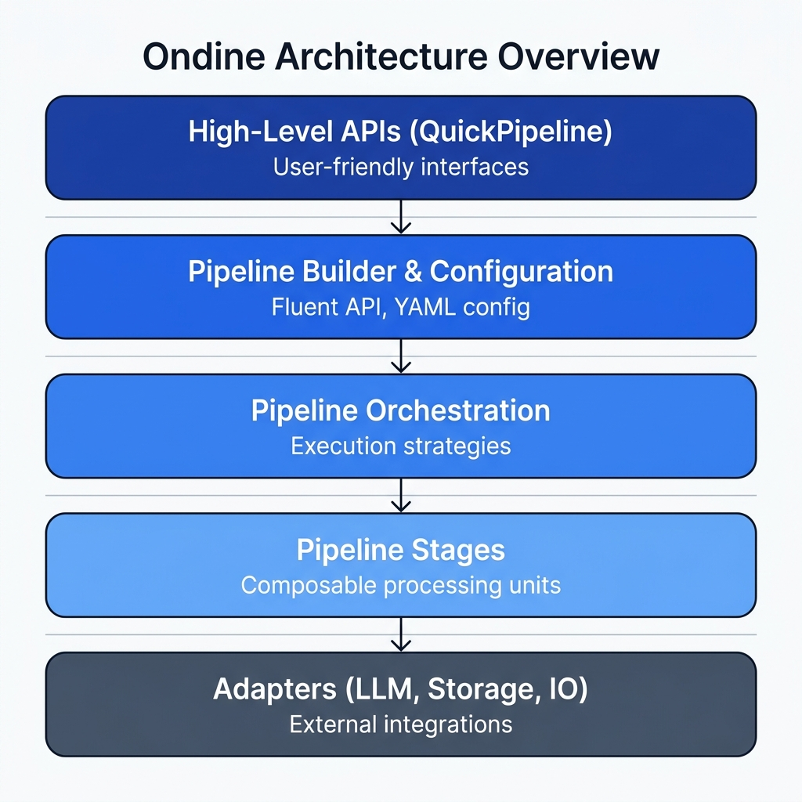
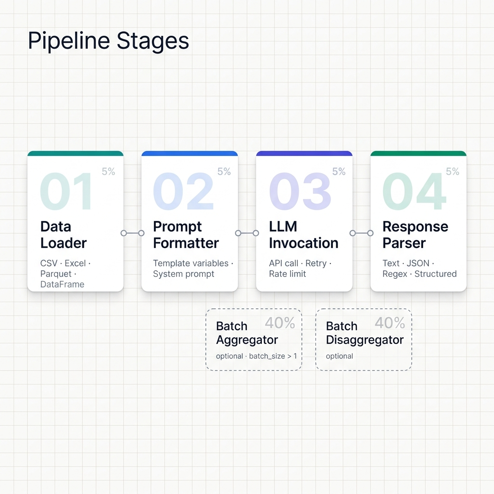

Core Concepts¶
This page covers the pieces that make up an Ondine pipeline and how they connect. If something breaks, this is the mental model that will help you find the problem.
Architecture Overview¶
Ondine uses a layered architecture:

Key Components¶
Pipeline¶
The Pipeline is the central execution unit. It drives data through stages in order.
from ondine import Pipeline
# Pipelines are built via PipelineBuilder
pipeline = PipelineBuilder.create()...build()
# Execute synchronously
result = pipeline.execute()
# Execute asynchronously
result = await pipeline.execute_async()
Once built, a pipeline is immutable and thread-safe. It owns all configuration, handles checkpointing and recovery, and tracks costs and metrics throughout execution.
Pipeline Stages¶
Data flows through composable stages in a fixed order:
- DataLoaderStage loads from CSV, Excel, Parquet, or DataFrame.
- PromptFormatterStage interpolates row data into your template.
- BatchAggregatorStage (optional) packs N prompts into a single API call.
- LLMInvocationStage calls the LLM with retry and rate limiting.
- BatchDisaggregatorStage (optional) splits the batch response back into N results.
- ResponseParserStage parses the LLM output (text, JSON, or regex).
- ResultWriterStage writes results to the output destination.
The two batch stages only appear when batch_size > 1. Multi-row batching can yield up to 100x fewer API calls, with automatic context-window validation and partial-failure handling.
Pipeline Builder¶
PipelineBuilder exposes a fluent API for assembling pipelines:
from ondine import PipelineBuilder
pipeline = (
PipelineBuilder.create()
# Data source
.from_csv("data.csv", input_columns=["text"], output_columns=["result"])
# Prompt configuration
.with_prompt("Process: {text}")
# LLM configuration
.with_llm(provider="openai", model="gpt-4o-mini")
# Processing configuration
.with_batch_size(100)
.with_concurrency(5)
.with_retry_policy(max_retries=3)
# Build immutable pipeline
.build()
)
Available builder methods by category:
- Data:
from_csv(),from_dataframe(),from_parquet(),from_excel() - Prompt:
with_prompt(),with_system_prompt() - LLM:
with_llm(),with_llm_spec() - Processing:
with_batch_size(),with_concurrency(),with_rate_limit() - Reliability:
with_retry_policy(),with_checkpoint() - Cost:
with_max_budget() - Execution:
with_async_execution(),with_streaming()

Custom Stages¶
You can extend PipelineStage to insert your own processing logic:
from ondine.stages import PipelineStage
class MyCustomStage(PipelineStage):
def process(self, input_data, context):
# Your processing logic
return processed_data
def validate_input(self, input_data):
# Validation logic
return ValidationResult(valid=True)
Specifications¶
Configuration lives in Pydantic models. Each spec type covers one concern:
DatasetSpec¶
from ondine.core.specifications import DatasetSpec
spec = DatasetSpec(
source="data.csv",
input_columns=["text"],
output_columns=["result"],
format="csv"
)
PromptSpec¶
from ondine.core.specifications import PromptSpec
spec = PromptSpec(
template="Summarize: {text}",
system_prompt="You are a helpful assistant."
)
LLMSpec¶
from ondine.core.specifications import LLMSpec
spec = LLMSpec(
provider="openai",
model="gpt-4o-mini",
temperature=0.7,
max_tokens=1000,
api_key="sk-..." # Or use environment variable # pragma: allowlist secret
)
ProcessingSpec¶
from ondine.core.specifications import ProcessingSpec
spec = ProcessingSpec(
batch_size=100,
concurrency=5,
max_retries=3,
checkpoint_interval=500,
rate_limit=60 # requests per minute
)
Execution Strategies¶
Synchronous (Default)¶
Sequential, single-threaded. Simplest to reason about:
Good when the dataset fits in memory and you want predictable behavior.
Asynchronous¶
Concurrent processing with async/await:
pipeline = (
PipelineBuilder.create()
...
.with_async_execution(max_concurrency=10)
.build()
)
result = await pipeline.execute_async()
Best when you need high throughput and the provider API supports concurrent connections.
Streaming¶
Memory-efficient processing for large datasets:
pipeline = (
PipelineBuilder.create()
...
.with_streaming(chunk_size=1000)
.build()
)
result = pipeline.execute()
Use this for datasets north of 100K rows or when memory is tight. See the Execution Modes guide for a full comparison.
Adapters¶
Adapters wrap external dependencies behind stable interfaces.
LLM Client¶
All providers share a single calling convention:
from ondine.adapters import LLMClient
# Automatically selected based on provider
client = create_llm_client(llm_spec)
response = client.complete(prompt, temperature=0.7)
Supported providers: OpenAI, Azure OpenAI, Anthropic Claude, Groq, MLX (local on Apple Silicon), and any OpenAI-compatible API.
Storage¶
Checkpoint persistence:
from ondine.adapters import CheckpointStorage
storage = CheckpointStorage(path="./checkpoints")
storage.save(state)
state = storage.load()
Data IO¶
Reads and writes CSV, Parquet, Excel, and JSON:
from ondine.adapters import DataIO
# Supports CSV, Parquet, Excel, JSON
data = DataIO.read("data.csv")
DataIO.write(data, "output.parquet")
Execution Flow¶
When you call pipeline.execute(), Ondine first validates configuration and input data, then calculates an expected cost estimate. It checks for an existing checkpoint and resumes from there if one exists. Data is loaded (streaming or in-memory), prompts are formatted with input variables, and the LLM is called with rate limiting and retries. Responses are parsed and validated, results are written to the output destination, and metrics (costs, tokens, timing) are aggregated. On success, the checkpoint is cleaned up.
Error Handling¶
Automatic Retries¶
Failed requests retry with exponential backoff:
Checkpointing¶
Resume long-running jobs after a failure:
Error Policies¶
Control how errors are handled:
.with_error_policy("continue") # Continue on errors
.with_error_policy("stop") # Stop on first error
Cost Tracking¶
Costs are tracked in real-time as requests complete:
result = pipeline.execute()
print(f"Total cost: ${result.costs.total_cost:.4f}")
print(f"Input tokens: {result.costs.input_tokens}")
print(f"Output tokens: {result.costs.output_tokens}")
print(f"Cost per row: ${result.costs.total_cost / result.metrics.processed_rows:.6f}")
Budget Control¶
Hard-cap your spend so a runaway pipeline stops before it drains your account:
from decimal import Decimal
pipeline = (
PipelineBuilder.create()
...
.with_max_budget(Decimal("10.0")) # Max $10 USD
.build()
)
# Execution stops if budget exceeded
result = pipeline.execute()
Observability¶
Progress Bars¶
tqdm tracks progress automatically:
Structured Logging¶
JSON-formatted output via structlog:
Metrics Export¶
Push metrics to Prometheus:
Next Steps¶
- Execution Modes - Async, streaming, and when to use each
- Structured Output - Type-safe response parsing
- Cost Control - Budget limits and token optimization
- API Reference - Full API documentation